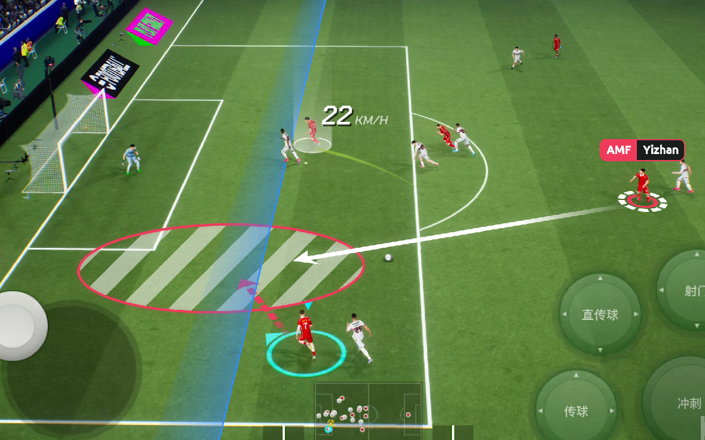
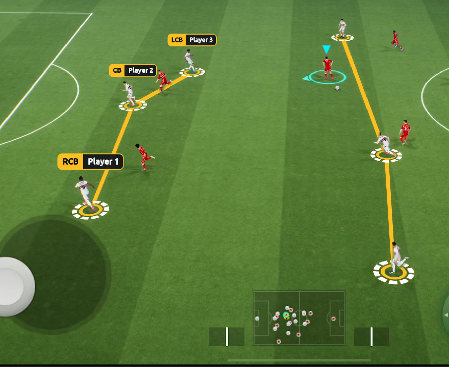
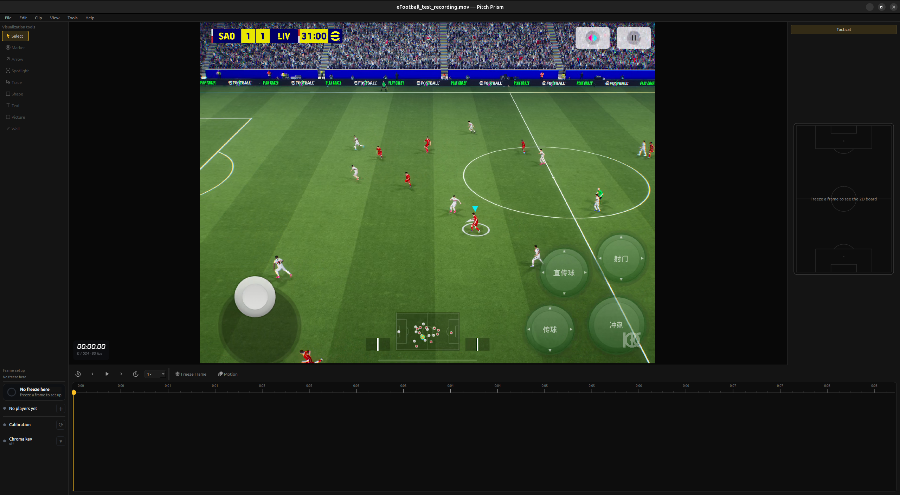
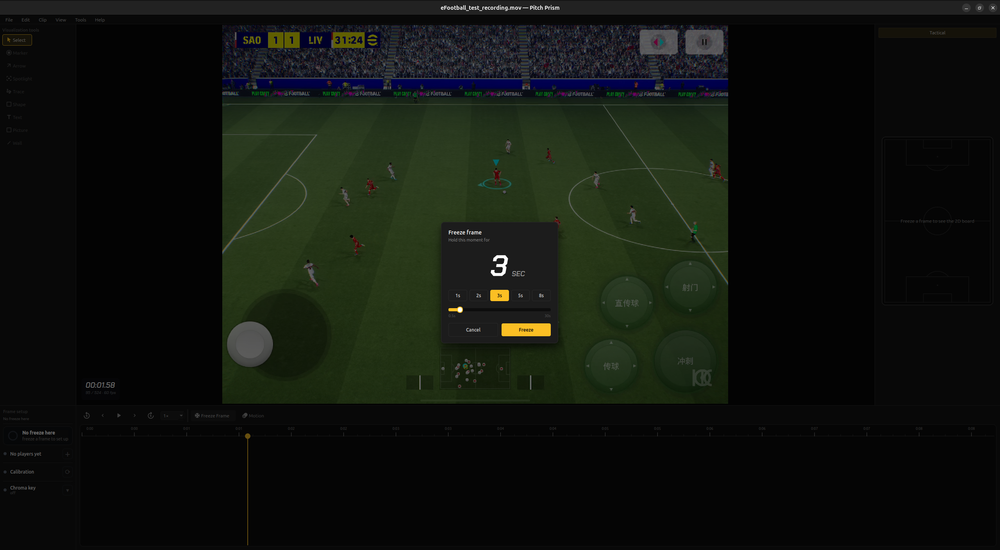
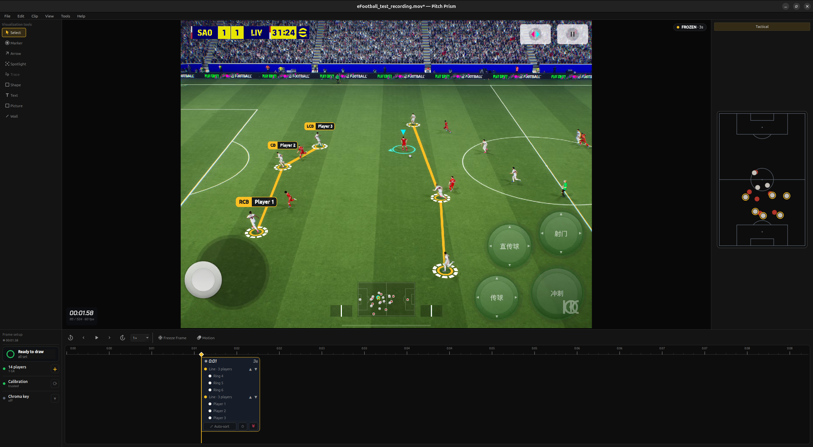
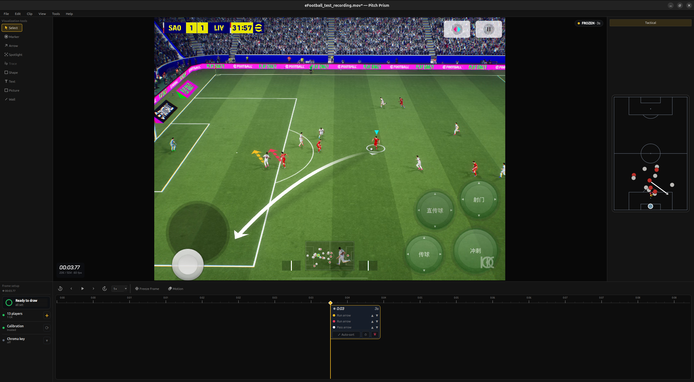
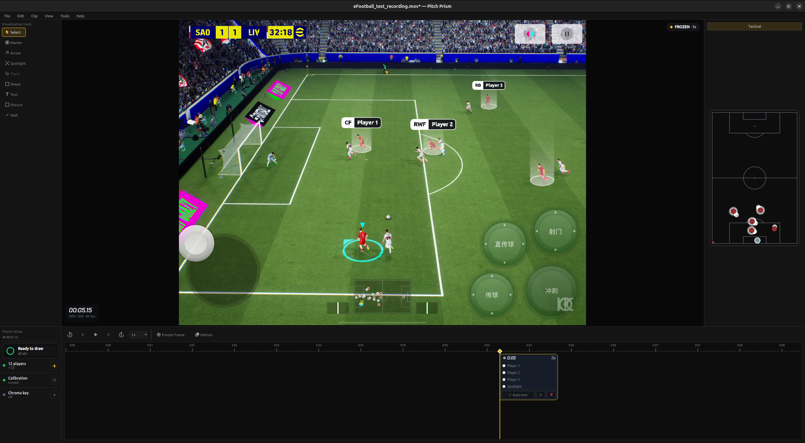
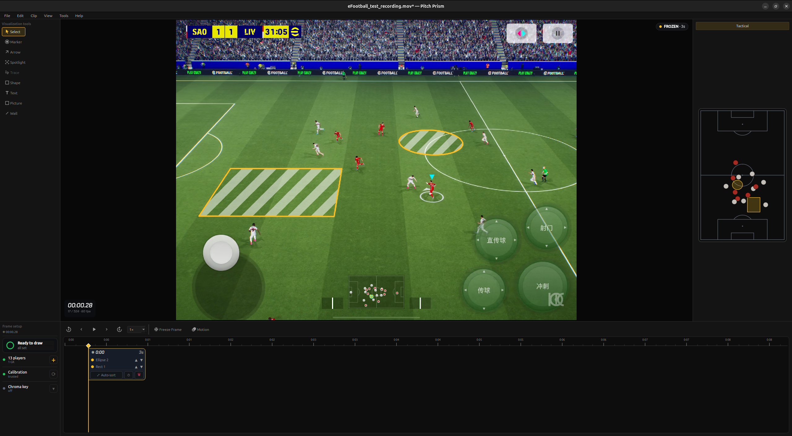
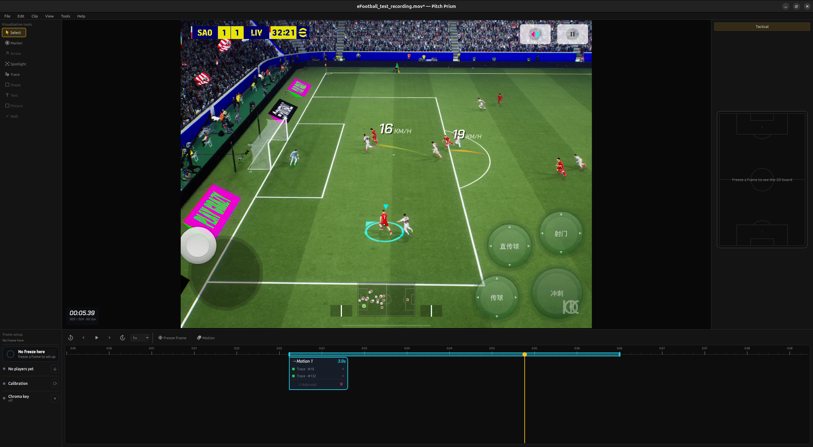

No chroma keying. No manual tracking. No hand-built homographies. Pitch Prism
automatically detects the pitch and tracks the players, letting you create complex tactical
illustrations in seconds.


A KICK product · Pitch suiteEARLY PREVIEW · NOT YET RELEASED
01
The interface
Everything lives in one window. The footage sits in the centre; the tools are down the
left; time runs along the bottom; and a live 2D board mirrors everything you draw on the right.

1
2
3
4
5
6
7
1Tool rail. Every visualization tool — Marker, Arrow, Spotlight, Trace, Shape, Text and more.
2Canvas. Your footage. You draw directly onto the pitch; zoom and pan freely.
3Frame clock. Timecode, frame number and frame-rate for the moment on screen.
4Watermark. Your brand, printed onto the footage and carried into exports.
5Tactical board. A top-down 2D pitch that mirrors every effect in real position.
6Setup panel. Readiness at a glance — players detected, calibration, chroma key.
7Transport & timeline. Play and scrub, and the two mode buttons: Freeze Frame and Motion.
02
Freeze a moment, mark the players
Press Freeze Frame to hold a moment. Pitch Prism finds the
players and calibrates the pitch on its own — then you draw.

Set the hold. Pick how long to freeze the moment — a preset or the slider.
Marker — circle a player, connect a unit

Click a player to ring him. Chain several into a line or shape —
a back four, a passing lane — and add name bars. Every ring and group is listed on the
timeline sticker.
03
Movement & focus
Arrow — runs and passes, painted on the grass

Drag from a player into space. A run drives flat along the turf; a
pass lofts and dives into the target. The heads read at a glance, and every arrow lands on
the sticker with its own layer order.
Spotlight — “watch this player”

Click a player to lift him out of the scene. A soft light cylinder rises from his
feet — the cleanest way to draw the eye, with none of the clutter of an outline. Add a name bar
to say exactly who.
04
Space & time
Shape — paint the space

Draw a zone — the space between the lines, a pressing trap, a channel. It fills
with a zebra or solid pattern, projects correctly onto the pitch in perspective, and is measured
in real square metres.
Motion & Trace — effects that follow the play

Choose a range on the timeline (the teal band) and pick a runner to
Trace. A speed-trail ribbon streams behind him as the passage plays, with live
km/h. Markers and spotlights can follow players across the range too.
05
Made for football
Because Pitch Prism understands the pitch — where the lines are, where the players are,
and how the camera sees them — every mark you make is grounded in the real geometry of the game.
Rings sit on the turf. Zones measure in metres. Trails read in km/h. And a live 2D board keeps the
tactical picture honest.